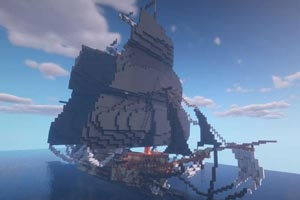
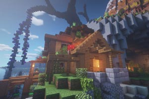
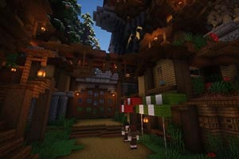
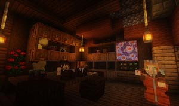
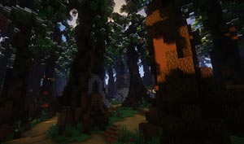
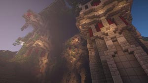
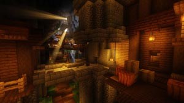
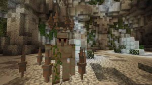

島國勇者 Hero of Island
前言
在台灣的眾多地圖創作中，RPG角色扮演遊戲一直是Minecraft創作的一大地圖類型
過去深耕於冒險及CTM等地圖類型的夢想之都工作室，也朝RPG創作邁出了第一步
自2018年開始，夢都的第一張RPG地圖計畫便開始籌備，由夢都五大部門共同協作
在2020上半年終於完成了這項創作：《島國勇者 第一章 - 諾斯克島》
劇情
諾斯克島，在被汪洋吞沒前，這裡曾是一片沙漠峽谷
被海吞沒後，隨著地殼變動，島嶼又逐漸展露
地表上開始長出植被，而人類也逐漸踏上了諾斯克
先民們在島上開墾，抵禦森林中狼群的襲擊，並建立了屬於自己的信仰
隨著克拉特的腳步，讓我們一步步揭開諾斯克背後那神秘的面紗
地圖預告片
動畫後製：派大星 | 音樂製作：白蘋
地圖場景







